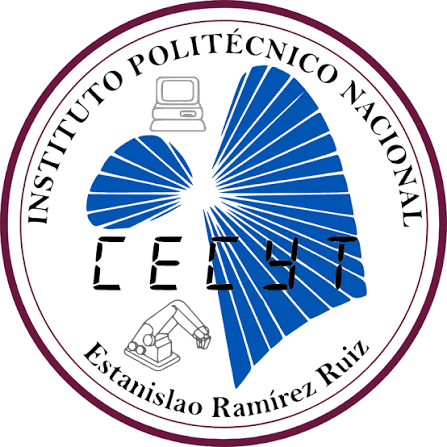

Técnico en Computación
CECyT 3 | Agosto 2024 - Presente
Grupo 5IM6. Formación técnica enfocada en programación utilizando Java, programación web usando HTML, CSS y JavaScript.

CECyT 3 | Agosto 2024 - Presente
Grupo 5IM6. Formación técnica enfocada en programación utilizando Java, programación web usando HTML, CSS y JavaScript.
